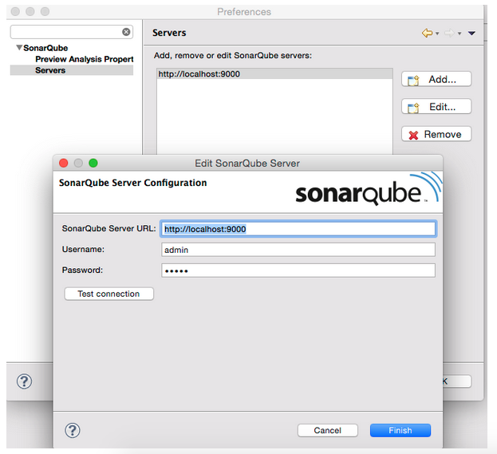

version 2.0
1. Certification Process
MuleSoft has expanded the Anypoint™ Connector platform enabling partners, from MuleSoft Partner Program, and third-party development groups, to develop Anypoint™ connectors.
Every connector in the MuleSoft Anypoint™ Platform must go through a mandatory Certification Process before final release. This certification process has been conceived to assess the overall quality of all available connectors, ensuring that every connector published in the MuleSoft Connectors library strictly follows industry best practices. As a result of this certification process, we are able to define a high quality threshold for every Anypoint™ connector available within the MuleSoft platform.
All available connectors, either built by our partners or by our internal development team, go through the same certification process, which is carried out by our MuleSoft’s internal team. Once a connector passes certification, it is branded as a MuleSoft-certified connector and published within the MuleSoft Connectors Library.
The scope of this process mainly depends on the composition of the connector, where a more complex connector will require further steps in the certification process. Our certification approach aims at testing every functional block of the connector prior releasing.
This document first introduces the entire Connector Lifecycle Model, which includes four different stages: On-board, Development, Certification and Publishing.
-
On-board: Takes into consideration the legal engagement between a third-party development group or partner, and MuleSoft.
-
Development: The development stage, considering strictly testing methodologies.
-
Certification: The certification process per-se, carried out by a MuleSoft.
-
Publishing: Considers the final deployment of the certified connector within MuleSoft Connectors Library.
Within these stages, we only take into consideration the second and third ones: Development and Certification. The first stage is out of the scope of this document, while the last one hardly requires interaction from the developer’s side and therefore it will be omitted.
The connector lifecycle model consists of the following stages:

1.1. Stage 1: On-Board
This first stage consists of legal matters involving the development of a connector for MuleSoft. This stage includes a learning phase of the default framework for developing connectors, the Anypoint™ Connector DevKit.
1.1.1. Legal Engagement
Both sides, MuleSoft and a Service Integrator (SI), state the guidelines and expected product deliverables before starting the development stage.
1.1.2. Learning Anypoint Connector DevKit
Anypoint Connector DevKit is the default tool for developing Anypoint connectors. It provides a vast set of features to help you develop and maintain your connector. Features include, but are not limited to:
-
Visual design and implementation using Anypoint Studio with an Eclipse-oriented interface that simplifies and speeds up development.
-
Maven support for development and building.
-
Connector development and packaging tools.
-
Authentication support for multiple types of authentication using OAuth and basic authentication types.
-
DataSense support to acquire metadata in design time.
-
Extensive testing capability.
-
Examples, training, and support to ease startup.
-
Batch, query pagination, and DataSense Query Language support.
The following are a set of useful links as a starting point:
1.2. Stage 2: Development
The development stage is one of two major phases, mostly occurring in the development team side. Since the MuleSoft team has relatively low control over this stage, MuleSoft requires every developer to follow a strict set of practices, which we call Mandatory Practices.
1.2.1. Design Specification Review
The design specification review phase, within the development stage, primarily assists developers and designers to clarify the functional behavior of the connector, provides extensive use cases, ranging from normal to border-cases, and includes an overall architecture design. MuleSoft strongly recommends that developers, as well as designers, consider this step mandatory, taking into consideration the Design Specification Template.
The Design Specification Template is one of the two Exit Criteria Documents from the development stage, needed by the MuleSoft team. The second document is the Certification Checklist Document, which ensures that every mandatory practice has been accomplished and complete all deliverables.
Due to Interoperability QA Guidelines, this checklist has the associated Manual Interoperability Test Run document.
1.2.2. Mandatory Practices
The Mandatory Practices assure an overall product quality, ranging from coding standards to documentation. The MuleSoft team requires that you strictly follow every practice and produce the required deliverables, including release notes and an user guide. Mandatory practices are detailed in following sections of this document.
1.3. Stage 3: Certification
The certification stage occurs mostly in the MuleSoft side. This stage includes different high-level objectives, such as:
-
Automated code scan
-
Manual code review and black box testing
-
Manual and automated tests review
-
Repository structure review
-
Documentation review
-
Runtime-compatibility review
-
Static code analysis
The certification stage requires different prerequisites, because a wide set of code properties are checked and validated. These properties include GitHub credentials, Maven dependencies, and code versioning, among others.
1.3.1. Prerequisites
Prerequisites to be satisfied:
-
Design Specification Template Approved: The Design Specification template has been approved and all suggested corrections have been taken into consideration by the development team.
-
Source Code Access and Sandbox Credentials: As part of the certification process, the MuleSoft team internally runs and continues tests execution, and runs a set of code inspections to validate the quality of the connector. The following actions are required:
-
GitHub account with read access must be granted to the user connectors-cert-ci (connectors-cert-ci at mulesoft dot com).
-
If required, provide the sandbox credentials used for tests execution.
-
Create a release branch containing all the bug fixes produced during the certification process. This follows the naming convention "release/v<version-number>". After the certification process is complete, all changes are merged into the master branch and a tag, with all the changes, needs to be created. MuleSoft strongly recommends that you follow GitFlow branching practices.
-
-
Maven Dependencies:
-
The connector must be a final version: No SNAPSHOTS are allowed.
-
SNAPSHOT dependencies are not allowed.
-
External dependencies need to be located in well-known public repositories.
-
-
Presentation Demo: The objective of this demo is to go over the functional aspects of the connector, the overview of the system to be connected, and the underlying integration technologies (REST/SOAP/SDK). The audience of this meeting are Product Managers, Connectors Engineers, Leads, and QA staff.
-
Complete the Certification Checklist
-
Connector Documentation: Access to your connector documentation is required.
-
Versioning: The Connector must follow the following versioning scheme. Given a version number MAJOR.MINOR.PATCH, only increment a MAJOR version when you make incompatible API changes; increment a MINOR version when you add functionality in a backwards-compatible manner; and increment a PATCH version when you make backwards-compatible bug fixes.
1.3.2. Certification
After completing all previous steps, MuleSoft starts the certification process, which is an iterative process. MuleSoft reports different recommendations, which need to be completed by the connector development team, otherwise certification fails.
MuleSoft defines a tentative starting date for the certification process, where MuleSoft recommends that your team allocates different time windows, so as to respond to our recommendations. After you resolve and implement all requirements, the certification process ends. However, if there is no active engagement in solving the proposed recommendations within a seven-day period, the whole certification process is suspended and a new tentative starting date is defined.
MuleSoft provides a CloudBees dedicated account (http://www.cloudbees.com) that you can use to monitor test execution and static code analysis reports.
The main communication channel between the MuleSoft team and your team is the MuleSoft connector forum, part of the MuleSoft forum community.
1.3.3. Results
-
Support Training: MuleSoft support team provides T1 support and helps you isolate the issue and identify if the issue is a MuleSoft issue or a connector issue.
-
*Upload of certified connectors to Anypoint Exchange. After your connector passes certification, MuleSoft sends you an estimated date for when your connector will appear in Anypoint Exchange. As part of this process, the following information need to be provided:
-
High level description of the connector. The SalesForce connector can be used as a template example.
-
URL to release notes.
-
URL to functional documentation.
-
URL to Anypoint Connector DevKit generated documentation.
-
1.4. Stage 4: Publishing
The final stage in the connector lifecycle model is publishing, which MuleSoft carries out. After the certification process successfully completes, the connector deployes and publishes in the MuleSoft Anypoint Exchange.
1.5. Release Re-Certification
Mule ESB and Anypoint Studio have a release cycle of three month, where MuleSoft assures that previously published connectors are compatible with new releases. Due to class-loading issues and data-mapping problems, already published connectors might not work in new Mule ESB versions. Therefore, prior to Mule ESB and Anypoint Studio releases, MuleSoft runs regression tests to assure full forward compatibility.
If regression testing fails, it is up to the connector development team to decide whether the connector supports or not newer versions of Mule ESB and Anypoint Studio.
2. Coding Standards and Best Practices
Development best practices and coding standards have been included within the connector development community over time, leading to improve the quality of connectors. During the certification process, most of these practices and standards are checked through automated tools, such as SonarQube.
2.1. Anypoint™ Connector DevKit Version
The last version of Anypoint™ Connector DevKit must be used to develop your connector. As of 2015, the latest stable DevKit version is 3.7.X.
DevKit 3.7.x assures that a connector will be compatible with Mule ESB 3.5.x, Mule ESB 3.6.x and Mule ESB 3.7.x. However, external libraries employed by the connector might have conflicts with different Mule ESB versions. Samity checks are mandatory for every Mule ESB version.
2.2. Connector Category
A connector should define its category in the POM properties:
<groupId>org.mule.modules</groupId>
<artifactId>mule-module-sample-connector</artifactId>
<version>1.0.0-SNAPSHOT</version>
<name>Mule Sample Connector </name>
<packaging>pom/packaging>
<properties>
<category>Select</category>
<licensePath>LICENSE.md</licensePath>
<devkit.studio.package.skip>false</devkit.studio.package.skip>
</properties>DevKit 3.7.x requires you to use Select in the category (i.e. <category>Select</category>) and to include the @RequiresEnterpriseLicense. In addition, you should use your own license validation mechanism.
2.2.1. Distribution Management
Configuration of the distributionManagement element varies from connector to connector, depending on its category and the project structure.
-
Select:
<distributionManagement> <repository> <id>mule-ee-releases</id> <name>MuleEE Releases Repository</name> <url>https://repository-master.mulesoft.org/nexus/content/repositories/releases-ee/</url> </repository> <snapshotRepository> <id>mule-ee-snapshots</id> <name>MuleEE Snapshots Repository</name> <url>https://repository-master.mulesoft.org/nexus/content/repositories/ci-snapshots/</url> <uniqueVersion>false</uniqueVersion> </snapshotRepository> </distributionManagement> -
Multi-module Select:
If a Select connector is part of a multi-module project, before the release we should verify that: * The connector’s module is deployed to the private nexus (same distribution management as described above for Standard, ci-releases). * The parent pom and other non-connector modules of the multi-module project have the same distribution management as described above for public or Community connectors.
For example, in a project with a parent pom, a utils module and a connector module, if and only if the connector is Select, then the parent pom should declare the public distributionManagement, and then it should be overriden in the connectors' pom with the private distributionManagement.
2.2.2. Distribution Management Matrix:
| Select | |
|---|---|
https://repository-master.mulesoft.org/nexus/content/repositories/releases-ee/ |
|
Single Module |
https://repository-master.mulesoft.org/nexus/content/repositories/releases-ee/ |
Multi Module |
Parent, Utils: |
Connector: |
2.3. Maven Conventions and Setup
The following section describes set of conventions and best practices to follow at the time to define your connector Maven project structure.
2.3.1. Best Practices
A connector tested in an isolated environment might not work in a Mule environment. Therefore, different constrains apply:
-
Follow Maven default name conventions.
-
Do not overwrite org.mule.tools.devkit:mule-devkit-parent properties.
-
Do not reference SNAPSHOT dependencies in plugins or dependencies.
2.3.2. Multi Module Layout
In large Maven projects, it is a common practice to divide the project in submodules. This means you may end up with a module for your connector and other modules for utils, commons or other kind of modularized source code that will be consumed by the connector.
Consider the following use-case:
Project parent pom
<groupId>org.mule.modules</groupId>
<artifactId>mule-module-sample-connector-parent</artifactId>
<version>1.0.0-SNAPSHOT</version>
<name>Mule Sample Connector Parent</name>
<packaging>pom</packaging>
<modules>
<module>some-util-lib</module>
<module>rehusable-service-adapter</module>
<module>mule-connector-sample</module>
</modules>In your connector’s module pom.xml:
Connector sibling dependencies
<dependencies>
<dependency>
<groupId>org.mule.modules</groupId>
<artifactId>some-util-lib</artifactId>
<version>1.0.0-SNAPSHOT</version>
</dependency>
<dependency>
<groupId>org.mule.modules</groupId>
<artifactId>rehusable-service-adapter</artifactId>
<version>1.0.0-SNAPSHOT</version>
</dependency>
</dependencies>It is important to notice that your connector’s pom inherits from mule-devkit-parent, and that each of the other sub-modules inherits from the project parent. Therefore, you will have:
Pom extra modules
<artifactId>some-util-lib</artifactId>
<packaging>jar</packaging>
<parent>
<groupId>org.mule.modules</groupId>
<artifactId>mule-module-sample-connector-parent</artifactId>
<version>1.0.0-SNAPSHOT</version>
</parent>
...<artifactId>rehusable-service-adapter</artifactId>
<packaging>jar</packaging>
<parent>
<groupId>org.mule.modules</groupId>
<artifactId>mule-module-sample-connector-parent</artifactId>
<version>1.0.0-SNAPSHOT</version>
</parent>
...Connector’s pom
<artifactId>mule-connector-sample</artifactId>
<name>Mule Sample Connector</name>
<packaging>mule-module</packaging>
<parent>
<groupId>org.mule.tools.devkit</groupId>
<artifactId>mule-devkit-parent</artifactId>
<version>3.6.0</version>
</parent>This mix of pom inheritance and agregation allows you to mantain a general parent pom for your secondary modules, and control the compilation in a single point, while leaves the connector with the required devkit-parent pom, making sure that all the other modules will be installed in your local repository before building the connector.
In multi-module projects, the deployment of the artifacts will vary depending on the connector’s category. Rule-of-thumb is that the parent pom and all the secondary modules (not the connector module) should be deployed to a public nexus repository, while the connector artifact will override its parent dependency management configuration with its own repository rules.
2.3.3. Avoid caching
Connectors should not hold state, unless is strictly necessary. Several APIs are actually hosted in cloud environments, and therefore caching states ends up in having untrusted data in the connector. There are a few cases where the connector might need to save some data of the current API while working on it, which leads into caching.
For those scenarios where the connector needs caching, the following code should be used:
// 1) The connector asks for the manager of the Object Store
@Inject
protected ObjectStoreManager objectStoreManager;And then uses the manager to get/create a custom Object Store as follow:
// 2) The connector asks Mule for the Object Store represented by a "given ID"
ObjectStore<? extends Serializable> os = objectStoreManager.getObjectStore("given ID");
// 3) The connector uses it
os.store("key", "value");Other ways to achieve caching could be through temporal files, but it might depend on the use case.
2.3.4. Avoid spawning threads
Same as caching, spawning threads is not recommended within a connector as a common API lives in the cloud. This means that a connector will not improve its throughput with more threads, because every communication with the API means more HTTP requests/responses. Although we don’t recommend using threads, as caching, there might be custom cases where they are actually needed.
For those scenarios where the connector needs to spawn threads you should use a Executor Service.
2.3.5. Reading resources from within the connector
When reading resources that are bundled with the connector, the usual getClass().getResourceAsStream("custom-file-to-read.txt") will work. But, if the file "custom-file-to-read.txt" can actually be parametrized through the Mule application, then other mechanism should be used.
Let’s consider that for your connector, a file can be feeded from the src/main/resources folder (again, this file comes from Studio, not from the connector), the following code should be used:
// 1) The connector asks for the manager of the mule context
@Inject
protected MuleContext muleContext;Then reads the resources as follow:
ClassLoader classLoader = muleContext.getExecutionClassLoader();
URL resourceURL = classLoader.getResource("custom-file-to-read.txt");Where "custom-file-to-read.txt" is the file to be read from the Mule app in src/main/resources/custom-file-to-read.txt.
2.3.6. Mule dependencies
Adding dependencies in your connector should be carefully considered, since they might collide with Mule. A few constraints apply, such as:
-
When adding Mule artifacts, always use
<scope>provided</scope>. -
When adding artifacts that might collide with Mule, choose versions that are in the current Mule versios, for what your connector is going to work with. Some of those artifacts are: cxf, jersey, spring, guava, etc.
2.3.7. Shading
For some corner cases, you might need to add a dependency that does collide with Mule either directly or in a transitive dependency. For those scenarios, we strongly recommend to use the same version of the library as Mule does or, if possible, change your library to another one equivalent. If none of the options above are available, and you still need that custom library that collides with Mule, then shading could work for you. The support for shading has been added in devkit 3.5.3.
You need to modify your connector’s pom.xml file to add the shading plugin in order to achieve two things: 1) add the custom jar into the connector and 2) rename the packages of the library into a new one in order to avoid collisions.
For simple cases, were the coliding libraries are explicitly declared (for example, you directly require a different jersey version than the one packaged with mule), shade only those dependencies.
The following snippet should work when using a library with the groupId org.some.library and the artifactId custom-artifact-id
<dependencies>
<dependency>
<groupId>org.some.library</groupId>
<artifactId>custom-artifact-id</artifactId>
<version>${some.lib.version}</version> <!-- version to be included in the connector jar -->
<!-- default scope is required-->
</dependency>
</dependencies>
<!- rest of the configuration -->
<build>
<plugins>
<plugin>
<groupId>org.apache.maven.plugins</groupId>
<artifactId>maven-shade-plugin</artifactId>
<version>2.3</version>
<configuration>
<!-- custom shade configuration -->
<artifactSet>
<includes>
<include>org.some.library:custom-artifact-id</include>
</includes>
</artifactSet>
<relocations>
<relocation>
<pattern>org.some.library</pattern>
<shadedPattern>org.some.${some.lib.version}.library</shadedPattern>
</relocation>
</relocations>
</configuration>
</plugin>
<!-- Other plugins -->
</plugins>
</build>Some other cases are more complex, since the issue appear with a transitive dependency. Let’s say you need an sdk my-sdk that uses some other dependency common-lib internally, if then mule uses an incompatible version of this common-lib, Classloader issue might appear.
For this case, you need to shade not only the sdk, but also the transitive dependency, that will now be explicitly declared as follow:
<dependencies>
<dependency>
<groupId>org.some.library</groupId>
<artifactId>custom-artifact-id</artifactId>
<version>${some.lib.version}</version> <!-- version to be included in the connector jar -->
<!-- default scope is required-->
</dependency>
<dependency>
<groupId>com.commons.lib</groupId>
<artifactId>commons-utils</artifactId>
<version>${common.utils.version}</version> <!-- version used by the sdk -->
<!-- default scope is required-->
</dependency>
</dependencies>
<build>
<plugins>
<plugin>
<groupId>org.apache.maven.plugins</groupId>
<artifactId>maven-shade-plugin</artifactId>
<version>2.3</version>
<configuration>
<!-- custom shade configuration -->
<artifactSet>
<includes>
<include>org.some.library:custom-artifact-id</include>
<include>com.commons.lib:commons-utils</include>
</includes>
</artifactSet>
<relocations>
<!-- as a best practice, rename packages using the dependency version-->
<relocation>
<pattern>org.some.library</pattern>
<shadedPattern>org.some.${some.lib.version}.library</shadedPattern>
</relocation>
<relocation>
<pattern>com.commons.lib</pattern>
<shadedPattern>com.commons.${common.utils.version}.lib</shadedPattern>
</relocation>
</relocations>
</configuration>
</plugin>
</plugins>
</build>Further explanation regardin maven-shade-plugin can be found here.
2.3.8. Connector Structure
If you create your connector project using the DevKit Studio Plugin, the generated project directory layout is the recommended approach. If you are interested in more details, the project directory structure is described here.
In order to provide automatic enforcement of this rules, the following plugin must be configure as part of the connectors pom.xml. We will be responsible for validating the project structure.
Copy and paste the following snippets in your connector pom.xml:
<build>
...
<plugins>
...
<plugin>
<groupId>org.mule.certification</groupId>
<artifactId>project-structure-validation</artifactId>
<version>1.0.5</version>
<executions>
<execution>
<phase>package</phase>
<goals>
<goal>validate</goal>
</goals>
</execution>
</executions>
</plugin>
...
</plugins>
...
</build>2.4. DevKit Standars and Best Practices
2.4.1. DataMapper Compliance
To have the best experience in Anypoint™ Studio, connectors must be DataMapper compliant. To achieve this, all operations must follow these recommendations.
Any argument, returned or received, must be one of the following data types:
-
Map
-
POJO
-
List<Map>
-
List<String>
-
List<POJO>
-
List<List<String>>
These types must be part of the method signature so that DataMapper can auto-recognize the types in it’s mapping UI.
Important: Only use a map if you cannot use a POJO. Only use a map if your data: . Is schemaless, for example if created using MongoDB. . Has user customizable schemas, if created with Salesforce. . Has unknown content.
| Good Example | Bad Example |
|---|---|
List<Map> query() |
List<DBObject> query |
void send(Invoice invoice) |
void send(Object object) |
Invoice getInvoice(String id) |
Object get(String id, Class typeToCreate) All operations must have a single object to take input from DataMapper. The object must be a single object, not multiple arguments. This object is called the Primary argument. |
| Good Example | Bad Example |
|---|---|
void createInvoice(Invoice invoice) |
createInvoice(Header header, List<LineItems> lineItems) |
void upsert(List<Map> sobjects, String type, String externalFieldId) |
N/A - Multiple arguments are still needed! |
GetTaxResult getTax(TaxRequest request) |
|
2.4.2. Annotations
If you have multiple arguments, annotate the Primary argument with:
@Default("#[payload]")
This way DataMapper knows which argument in the operation to use for mapping.
2.4.3. No Warning during compilation
DevKit does a intensive analysis of the used annotations and semantic of them in conjunction with others. It’s important the the code is free of compilation warning to help on the maintainability of the code and to follow good practices.
2.4.4. DevKit Generated API Doc
Connector documentation is composed of two different type of documentation: DevKit Generated DevKit API Doc and the Connector Documentation.
DevKit API Doc is automatically generated by DevKit based on the JavaDoc documentation at the connector class. This is one of the most important information used by the developer at the time of using the connector.
2.4.5. Connectors Code Convention
We provide a file with a recommended code styling format for connectors. This is an important aspect of the connectors code quality and most of the connectors uses this standar format. This style can be imported in Eclipse, Studio and IntelliJ.
Download the Connectors Style Format: Here.
2.4.6. @Config friendly names conventions
In order to provide consistency across all the connectors, Global Element default name should a follow a convention: . If there is one single configuration, "Configuration" should be used as friendlyName . If there is more than one configuration, the following convention should be followed: .. "OAuth 2.0" for a OAuth configurations .. In other other case, use a brief descriptions honoring the same terminology used in the system to integrate
GlobalElement name is configured using the friendlyName attribute of the configuration class.
2.5. Connector Demo Example
A Mule application’s endpoints allow a user to interact with the service and API using the connector. Endpoints are committed to the GitHub repository along with source code. Use services or API use cases to determine which connector operations to select.
Guidelines to follow:
-
All demo projects must be isolated in a folder with a descriptive name (It does not matter if is just only one demo). Eg: https://github.com/mulesoft/magento-connector/tree/develop/demo
-
Use a meaningful name for the project. Avoid things such as "my-connector-demo" or "example-1". This name will be displayed in the ApiDoc site. Eg: http://mulesoft.github.io/salesforce-connector/
-
The demo name must have middle lines to separate the words in it and must be in lower case. example: "mail-service-demo"
-
Don’t add prefix such as "mule" or "app". Just the purpose of it.
-
Ensure that an app can be run by entering credentials without additional configuration or connector installation.
-
Use placeholders for credentials.
-
Ensure that flow names and message processors display names that make the use case easy to understand.
-
Provide instructions on how to run the app in a README file (for example, S3). It is recommended to add in a description of the demo application, such as what it aims to demonstrate and what each step of the demo is responsible for. Where application, you can also mention where your demo fits in a larger usecase.
-
Expose a set of endpoints that the user can access following the steps in the README to reproduce a use case.
-
Consider implementing a CRUD (or similar) use case with chained processors whose payloads get logged into the Studio console (for example, S3).
-
Use DataMapper for Standard or Premium connectors' CRUD (or a similar) use case if API methods attributes and/or return types allow it.
-
Consider basic error handling in the Mule app.
There are two kinds of demos that you can create:
-
Single operation demos
-
Workflow demos
Single operation demos are used to invoke just one operation in the connector. Workflow demos are used to invoke a number of operations in the connector sequentially. These aim to show a simple usecase of the connector, such as a normal CRUD workflow. We provide two templates to help you create an interface for your demo, one for each kind of demo. You can find the template for single operation demos here and the template for the workflow demos here.
The demo HTML pages above make use of Twitter Bootstrap to present a clean interface to the user. You should base your demo on this template. If you are not familiar with the Twitter Bootstrap library, it is highly suggested to look at their documentation page. Single operation demos only provide a form, whereas workflow demos provide an accordion, where one step leads to the next. In the latter case, any values retrieved by the first step should be used to autofill values in the second step where possible.
As an example, let us take a CRUD workflow for a number of Twitter API calls. The first step will create a tweet and return a number of values pertaining to the tweet that was created. One of these values would be the Tweet ID. The second step would be the "read" operation. The tweet ID should be automatically filled in the second step so that the user is simply able to submit a "read" API call without any needed input. The final step of the workflow should present an alert (or a notification of some sort), that the workflow has ended, outputting any relevant information from the last step. An example of this would be a "Tweet Deleted" message if the workflow was completed successfully, and the tweet that was created in the first step is successfully removed.
The following code snippets explain some parts of the above HTML page. The demo contains 3 parts:
-
The JavaScript that handles asynchronous calls to the demo running on a Mule instance.
-
The CSS that renders the HTML page
-
The HTML itself
The JavaScript
The JavaScript for this demo is simply used to send AJAX calls to a Mule server that hosts your demo application. In the case of workflow demos, it is also used to collapse the accordions as the user goes from one step to the next.
Initially, a reference to the <div> and <form> elements is obtained.
var createDiv = $('#createDiv');
var readDiv = $('#readDiv');
var updateDiv = $('#updateDiv');
var deleteDiv = $('#deleteDiv');
var createForm = $('#createForm');
var readForm = $('#readForm');
var updateForm = $('#updateForm');
var deleteForm = $('#deleteForm');Then, each form is paired with a jQuery function sends an AJAX request whenever a form is submitted.
createForm.submit(function() {
$.ajax({
type: 'POST', // Submit an HTTP POST request
url: '/create', // The URL where your endpoint is listening
data: createForm.serialize(), // Serialized form URL-encoded input
success: function(data) { // Success function called if request succeeds
$('input[name=message]').val(data.message); // Autofill data in the next workflow step as needed
createDiv.collapse('hide'); // Hide current accordion window
readDiv.collapse('show'); // Show next accordion window
},
error: function(request, status, error){ // Error function is executed if an exception occurs in the flow
alert(request.responseText); // Alert the user of any errors
}
});
return false; // Let jQuery handle the form submission
});In the case of a workflow demo, every form will represent a step in the workflow. The above code snippet should be repeated for every form you have in your workflow, applying changes as needed.
The CSS
The HTML page linked above comes with a number of CSS presets that you can use throughout your demo. A number of Bootstrap CSS classes are also used to build the accordion and the panels within it. For more information on how to build your own accordion, or even extend the one in the HTML template, please refer to the Bootstrap Accordion documentation page.
The HTML
This part is what ties everything together. The HTML represents what your users will see when they open your demo to use your connector. Take this HTML snippet as an example:
<div class="panel-group" id="accordion">
<div class="panel panel-default">
<div class="panel-heading">
<h2 class="panel-title demo-heading">
<a data-toggle="collapse" data-parent="#accordion" href="#createDiv">Create</a>
</h2>
</div>
<div id="createDiv" class="panel-collapse collapse in">
<div class="panel-body">
<form id="createForm" class="demo-form" role="form" >
<label>Message</label>
<input type="text" name="message" value="Hello from Mule!" required class="form-control" ><br>
<input class="btn btn-lg btn-primary btn-block" type="submit" value="Create"><br>
</form>
</div>
</div>
</div>
...
</div>The above snippet of HTML is taken from the workflow demo template, it represents a single panel in the accordion. This panel is split into two parts: the header and the content. The header refers to the content through the anchor tag (<a>). When this header is clicked, the content is shown. On the other hand, the content is composed of a simple form that is used to submit requests to Mule. These requests are handled by the JavaScript shown above.
For a complete example of a workflow demo, you can download a sample project that uses MongoDB here.
2.6. Third-Party Licenses
As part of the certification, it’s important to validate that all the libraries used by the connector are Open Source friendly. A easy way to generated a report of this, is running the following command:
mvn org.codehaus.mojo:license-maven-plugin:1.8:aggregate-add-third-party
The current list of licenses approved for use by third-party code redistributed with Community Connector projects is:
-
Apache Software License 1.1
-
Apache Software License 2.0
-
W3C Software License
-
Common Public License Version 1.0
-
IBM Public License 1.0
-
Mozilla Public License Version 1.1
-
Common Development and Distribution License (CDDL) Version 1.0
-
GNU Free Documentation License Version 1.3
-
BSD
-
MIT
Licenses that are not approved for use include:
-
GNU GPL 2.0
-
GNU LGPL
-
Sun Binary Code License Agreement
2.6.1. Open Source Compliance Checklist
Check that :
-
No not approved for use third-party libraries are been distributed with your project
-
There are no dependencies with no license
-
Approved third-party are compliant with their license requirements
2.7. Connector Icon
We recommend your connector have a consistent look-and-feel with existing connectors in Anypoint Studio. You can replace existing icons in {your connector project}/icons with proper ones.
Example: Slack Connector
Slack Small Icon

Slack Large Icon

3. Static Code Analysis and Coverage
Most automatic validations on your connector’s code are done with SonarQube, an open source static code analysis tool that helps developers identify hot spots in code, bad code quality, technical debt, as well as define a number of other issues. To release a connector, you must fix blocker and critical issues.
To perform these validations yourself, install and configure a the SonarQube server that we provide with rules specific to the certification process. If you are certifying multiple connectors, you can reuse the same server.
|
Note
|
For guidelines on how to build your tests using this framework, see Automated Functional Testing |
3.1. Installing SonarQube
The quickest way to get SonarQube up and running is to install it locally with an embedded database. If you wish to use a standalone database or a more advanced configuration, see the related SonarQube Eclipse Plugin Setup documentation.
You need a server running Oracle JRE 6 or higher. (OpenJRE or other distributions are not supported by SonarQube.)
-
Download and extract the latest version of SonarQube(all platforms).
-
Run <installDir>/bin/<yourOS>/sonar.sh start or <installDir>\bin\<yourOS>\StartSonar.bat if on Windows. The server might take a while to start even after the “Started SonarQube” message appears.
-
Browse to http://localhost:9000.
-
Log in with the following credentials:
-
Username: admin
-
Password: admin
-
-
Download our Custom Quality Profile
-
Go to the Quality Profiles tab and Click Create.
-
Then choose the Quality Profile file that you downloaded, name it "Anypoint Connectors Profile" and click Create.
-
When you see the profile in the list click in Set as Default.
-
Finally you need to set the exclusions, to set this go to Settings and click Exclusions.
-
In the Code Coverage tab add target/**
-
Click Add Value and click Save Code Coverage Settings.
-
In the Files tab add target/** under Global Source File Exclusions and Global Test File Exclusions.
-
Finally, click Add Value in both and click Save Files Settings.

3.2. Performing Your First Analysis
For the first run of your project, go to the project’s root folder and run:
mvn clean org.jacoco:jacoco-maven-plugin:prepare-agent test -Dmaven.test.failure.ignore=true -Dtest="*TestSuite,*Test" -D<connector>_CREDENTIALS=automation-credentials.properties && mvn install && mvn sonar:sonar mvn clean org.jacoco:jacoco-maven-plugin:prepare-agent install-Dmaven.test.failure.ignore=true && mvn sonar:sonar
This creates the project in your sonar installation, allowing you to use the Eclipse SonarQube plugin from inside your Anypoint™ Studio. Using this plugin is the recommended way, but is always possible to run the inspections manually with * mvn sonar:sonar *.
If you are experiencing false positive issues, you can disable the inspection using //NOSONAR comment at the end of a line which has the issue on a case-by-case basis. Every use of //NOSONAR is recorded by SonarQube as an Info issue so you can track its usage in your connector’s code.
|
Note
|
The use of //NOSONAR comments should only be used when there is full certainty that this inspection is a false positive. |
For example, suppose you have an incorrectly capitalized method that you can’t change. This is normally a blocker issue:

After adding the //NOSONAR marker, this is no longer a blocker issue, but is marked as Info so you can track the usage of //NOSONAR throughout your project:
3.3. SonarQube Eclipse Plugin Setup
-
Open Anypoint™ Studio, then select Help > Install New Software.

-
In the Work with text box, fill in the update site URL: SonarQube Integration for Eclipse (update-site) - http://downloads.sonarsource.com/eclipse/eclipse/

-
Check the SonarQube Java option.
-
After completing the installation, restart Anypoint™ Studio.
-
Open Anypoint™ Studio’s preferences, and browse to the SonarQube section. Expand it, and select the Servers subsection. Click Add and fill in the URL and credentials for your server (by default, admin/admin).
Click the Test connection button to ensure that your settings are correct.
-
To associate your project on the SonarQube server, perform a full analysis once. You can do this by running mvn sonar:sonar in your Connector project.
You should perform this full analysis from a machine that is on the same network as the SonarQube database, otherwise it might take very long to complete.
When your project finishes analyzing, in Studio right-click your connector project and click Configure > Associate with SonarQube. Because your project was analyzed with Maven, the association detects automatically.

-
After association, your project is analysed with SonarQube and the results are shown on the SonarQube issues tab. Also, the Package Explorer and file editor display error and warning icons according to the issues on your project.
New issues introduced since the previous analysis are marked as errors, while existing issues are marked as warnings. This is a cosmetic difference only, which helps to highlight new technical debt being introduced in your code before you check it in.
-
To analyse your project again, right-click it and click SonarQube > Analyse.
3.4. Quality Profile Rules
SonarQube classifies each issue with a severity:
-
Blocker & Critical: Bugs or unacceptable programming practices. Your connector cannot have blocker or Critical issues to be certified. You must correct all issues.
-
Major: These inspections fall in a similar category to the critical issues but with lower priority.
-
Minor: Correctness, clarity or performance issues that do not impact your connector’s functionality significantly.
-
Info: Keeps track of useful information that might otherwise go unnoticed.
To see the full list of rules checked by SonarQube, browse to the Anypoint™ Connectors Certification quality profile through the web UI.
3.5. Code Coverage
SonarQube also lets you manage Code Coverage reports of your connector.
Generate a code coverage report in SonarQube with this command:
mvn clean org.jacoco:jacoco-maven-plugin:prepare-agent install -Dmaven.test.failure.ignore=true && mvn sonar:sonar
After this command finishes executing, Sonar displays a report with the name of your connector. For example, this screenshot shows the Salesforce connector’s Sonar report after running every Unit test and Functional test:

Delving further into the project details shows you a code coverage percentage on a per-class basis.

Delving even further, it shows you the exact lines that are covered by tests and those that are not.

Every connector method must have unit or automation tests. A connector fails certification if it does not have all its message processors, message sources, and custom transformers covered by unit tests or automation tests. Also, all the utility classes that are part of a connector must have a high level of code coverage.
3.5.1. Code coverage must be no less than 70%.
Testing your processors gives you a good indication of the quality of your connector. When you build automation tests, you are using your own connector to connect to an API. If you find it hard to test all cases of a message processor, then consider separating your message processors into smaller ones, if possible.
If your connector bases its processing around metadata, test every possible metadata entry that the API supports. As an example, the Salesforce connector supports multiple SFDC objects (such as Account, Contact, Lead etc.), but it only contains one “create” operation. Create a unit test for every metadata object to ensure proper compatibility with the message processor.
3.5.2. Ignoring Classes from Testing
You should NEVER prevent classes from being tested unless there is good reason. If you feel that there is a need to ignore classes from inspection, contact either Mariano Quintela, or Paulo Gustavo Veiga. Unless explicitly stated in the code comments or in some form of internal documentation, assume that all code must be inspected. Any ignored classes or packages without proper explanation should be inspected and any blocker or critical issues that arise should be resolved, and tested by the developer before the connector is released.
There are a number of ways of ignoring classes that you do not want inspected by SonarQube:
-
Method level ignore:
-
Methods can be ignored by adding a //NOSONAR comment next to the method declaration. Example:
public void someMethodToNotInspect() { //NOSONAR
-
-
Class level ignore
-
It may be the case that whole classes need to be ignored because they’re not in the control of the developer. As an example, the SFDC Connector contains classes from the SFDC JAR. These had to be modified slightly to include no-args constructors for DataSense reasons. As a result, these classes have to be ignored since the code quality is not in control of the SFDC Connector developer.
-
Classes can be completely ignored by adding // NOSONAR next to the class level definition. Example:
public class MyClassThatShouldntBeInspected { // NOSONAR
-
-
Package level ignore
-
Whole packages can be ignored by adding the “sonar.exclusions” property inside the pom.xml file. Example:
<properties> <sonar.exclusions>src/main/java/com/sforce/**/*</sonar.exclusions> </properties>This ignores any file under the com.sforce package under src/main/java.
-
3.6. Code Quality Review Guideline
This is a hard area to tackle because typically, the person running certification is different from the one implementing the connector and writing tests for it. As a result, you might inspect the code and be completely lost.
If code documentation is not sufficient, point this out to the developer and PM.
As you try to understand the code, you might run into certain code pieces that you’re not sure why they’re there. As an example, PeopleSoft contained synchronous code and some time was spent by the developer understanding why they were there. It turns out that they were not needed, and were causing a degree of locking when working with concurrent requests. If you think that there are code blocks that feel out of place, mention it to the developer or PM.
4. Tests Automation
This section explains how to automate test cases for Anypoint MuleSoft Connectors. Tests are Functional Tests, System Tests or Unit Tests depending which aspect of the connector is being tested.
Functional tests aim at testing the connector with a particular Mule runtime environment, thus assuring backward and forward compatibility. System tests group those aspects were a connection is needed but no underlying Mule runtime is required, such as when testing valid/invalid credentials or different connection configurations. Finally, unit tests aim at verifying isolated components, or units, of the connector which do not require a valid connection nor a Mule runtime.
Once all tests have been engineered, a final test execution step is required. This execution step requires to run functional tests with different Mule runtimes configurations, run System tests with valid/invalid credentials and finally run unit tests.
4.1. How to Start?
There are different aspects to tests:
-
Processors: For each processor, a functional test is required.
-
MetaData: MetaData requires functional tests as well, but employing a slightly different approach than processors.
-
Pagination: If the connector implements @Paged processors, then pagination has to be tested.
-
Test Connectivity: Every connection configuration has to be tested with valid/invalid credentials, wrong configuration values, etc.
-
WSDL Operations: Testing WSDL operations is required ONLY when your connector is SOAP Connect. As with MetaData, testing these kind of operations require a different approach than processors.
For functional tests, DevKit Plugin generates functional tests scaffolding, as explained here. This scaffolding generates a functional test per available processor, which covers the functional testing part. System and Unit tests need to be written entirely from scratch.
4.2. Best Practices
Before starting, there are a few best practices when engineering test cases:
-
Always clean the connector sandbox after running either Functional or System tests.
-
setup(): If @Before behavior is required, this method must be defined and annotated accordingly.
-
tearDown(): If @After behavior is required, this method must be defined and annotated accordingly. Normally all cleaning behaviour regarding the sandbox should go here.
-
.gitignore: Automations credentials and any sensitive data should be added to this file to avoid any mistake when committing the connector project.
4.3. Functional Tests
Functional tests aim at assuring the correct behavior of the connector within a particular Mule runtime environment, particular testing how well the connector integrates with Mule architecture.
Functional testing is a mandatory step within the certification process and need to be carried out following strict practices, who are detailed throughout this section.
4.3.1. Tests Organization
Functional tests need to be engineered and organized as follows:
-
Test Suites: FunctionalTestSuite groups all functional tests with no exception. In case two or more test suites are required (when grouping semantic similar tests for instance), a FullFunctionalTestSuite need to be used, grouping the remaining test suites.
-
Naming Convention: Functional tests must end with TestCases. Employing alternatives ending names is discouraged, specially endings such as Test or TestCase.
-
Test Categories: Tests categories might be used if needed, although are discouraged. However, if used, they need to be named as FunctionalTest.class.
|
Tip
|
When not using test categories, a test suite might use @RunWith(Suite.class) before the list of classes within the suite itself. Thus, all listed test classes are executed and any test category is needed. |
4.3.2. Packages and Files
Test files need to be kept in specific packages as follows:
-
org.mule.modules.<connector-project>.automation.runner contains the test runner (FunctionalTestSuite).
-
org.mule.modules.<connector-project>.automation.functional contains the functional test cases exclusively.
4.3.3. Test Data
Test data must be contained within a org.mule.modules.<connector-project>.automation.functional.TestDataBuilder.java class. This test data builder must generate all necessary test data for every single functional test. Developers are free to use whatever data input techniques within this data builder (JSON, Beans, etc.).
It is advisable to avoid binding test data with test cases and keep all test data generation within the test data builder.
4.3.4. Connector Testing Framework
The main objective is to test the connector with different Mule runtime environments through the Connector Testing Framework, allowing to detect possible conflicts, such as class loading issues. The default functional testing framework is called CTF (Connector Testing Framework).
Documentation of the Connector Testing Framework is available here. This framework eases the creation of connector functional tests, where the developer is not necessarily involved with Mule’s internals, such as flows, configurations and Spring beans. The objective of this framework is twofold. On the one hand, we decouple how Mule works and how functional tests are written. On the other hand, we enable a runtime platform to run connector tests with multiple Mule versions by executing the tests in remote Mule instances, achieving a decoupled runtime environment.
Any other approach for carrying out functional tests is highly discouraged. However, certain aspects of functional testing is not cover within CTF and thus custom approaches might be used. The following sections described which aspects can and can not be tested with CTF.
4.3.5. CTF Components
All functional test cases classes must extend from a AbstractTestCase<T>, which is parametrized with the connector type under tests.
AbstractTestCase<T>.java is found within org.mule.tools.devkit.ctf.junit and implements all the initialization and shut down of the CTF by means of @BeforeClass and @AfterClass methods. Extending from this class is mandatory, since it assures the correct use of the CTF.
Every test case needs to be named as <OperationName>TestCases. These naming conventions avoid Maven to automatically run test cases, since tests require credentials and therefore automatically running them without the proper set of credentials will produce tests to fail.
<OperationName>TestCases Class
Each connector operation, which has its own processor, has an <OperationName>TestCases.java class that contains its related test cases.
import ...
import org.mule.tools.devkit.ctf.junit.AbstractTestCase;
public class <OperationName>TestCases extends <<ConnectorClass>>AbstractTestCase {
// private attributes used as auxiliary fields for storing test run values
private Integer leadRecordId;
// Use to create required data for the test.
@Before
public void setUp() throws Exception {
...
}
//returns the sandbox to its original state
@After
public void tearDown() throws Exception {
...
}
//Method that invokes the connector operation under test and asserts on the return value.
@Test
public void <testName> throws Exception {
// Test code
// Assertions
}
}The exception might be managed within the test case if the required information is available or it might be thrown.
[ConnectorClass]AbstractTestCase Class
In case a sub-parent is needed, it must be named as [ConnectorClass]AbstractTestCase, which will extend from CTF AbstractTestCase and add the required behavior, such as @Before and @After methods.
import ...
import org.mule.tools.devkit.ctf.junit.AbstractTestCase;
class <<ConnectorClassName>>AbtractTestCases extends AbstractTestCase<ConnectorClass> {
public <<ConnectorClassName>>AbtractTestCases(){
//This is required if running single tests as well as a test suite
super(ConnectorClass.class);
}
@Before
public void setUp() throws Exception {
...
}
@After
public void tearDown() throws Exception {
...
}
}FunctionalTestSuite Class
This suite groups all functional tests with no exception and also manages the lifecycle of the Mule platform.
public class FunctionalTestSuite {
@BeforeClass
public static void initialiseSuite() {
ConnectorTestContext.initialize(<ConnectorName>.class);
}
@AfterClass
public static void shutdownSuite() throws Exception {
ConnectorTestContext.shutDown();
}
}CTF Connector and Dispatcher
The AbstractTestCase class provides getters for the following objects:
-
Connector: This CTF component enables testing on every connector processor, mocking the real connector under tests. Thus, all the underlying Mule logic is kept within CTF and not exposed to the test developer.
-
Dispatcher: This second CTF component enables testing on particular aspects of a connector, such as Pagination, WSDL Operations and MetaData.
Both objects are properly documented within CTF documentation here.
4.3.6. Topics to Test using CTF
CTF enables testing of the following aspects:
-
Processors
-
MetaData
-
WSDL Operations
-
Pagination
|
Tip
|
We will use throughout these examples the CookBook Connector, a test connector available here. We will not consider a <ConnectorName>TestCase and therefore every test case will extend directly from AbstractTestCase. |
Testing Processors
CTF enables testing of processors in a simple manner. By means of a mocked connector, we can call every connector operation with its actual parameters, without dealing with Mule internals (Spring beans, Mule flows, etc.).
Let’s consider one of the available processors within CookBook Connector, getRecentlyAdded. A functional test will be:
import ...
import org.mule.tools.devkit.ctf.junit.AbstractTestCase;
public class GetRecentlyAddedTestCases extends AbstractTestCase<CookBookConnector> {
//No @Before or @After methods required
@Test
public void testGetRecentlyAdded() throws Exception{
List<Recipe> resultList = getConnector().getRecentlyAdded();
//Assert on resultList
}
}The method getConnector() returns an instance of the actual connector under test, allowing to invoke its operations with its parameters. In this particular case, getRecentlyAdded does not require any parameters.
Testing MetaData
Anypoint Studio DataSense allows a connector to gather metadata from the remote service in design time, enabling Anypoint developers to deal with actual object types and descriptions instead of generic types.
A single metadata class per MetaDataCategory is accepted, named as <CategoryName>MetaDataTestCases, which will include two tests: testMetaDataKeys and testMetaData for that specific category. CTF provides getDispatcher(), which exposes two methods for fetching MetaDataKeys and MetaData, fetchMetaDataKeys() and fetchMetaData(keyName). The first one fetches all keys from the MetaData underlying service, while the second one retrieves the descriptor for a particular MetadataKey.
import ...
import org.mule.tools.devkit.ctf.junit.AbstractTestCase;
public class CookBookMetadataCategoryMetaDataTestCases extends AbstractTestCase<CookBookConnector> {
@Test
@MetaDataTest
public void testMetaDataKeys() throws Exception{
Result<List<MetaDataKey>> metaDataKeysResult = dispatcher.fetchMetaDataKeys();
assertTrue(Result.Status.SUCCESS.equals(metaDataKeysResult.getStatus()));
List<MetaDataKey> metaDataKeys = metaDataKeysResult.get();
MetaDataKey recipeKey;
MetaDataKey ingredientKey;
for (MetaDataKey key : metaDataKeys) {
if (recipeKey == null && key.getId().equals("Recipe"))
recipeKey = key;
if (ingredientKey == null && key.getId().equals("Ingredient"))
ingredientKey = key;
}
//Assert on MetaDataKeys
assertNotNull(recipeKey);
assertNotNull(ingredientKey);
}
@Test
@MetadataTest
public void testMetaData() throws Exception{
Result<List<MetaDataKey>> metaDataKeysResult = dispatcher.fetchMetaDataKeys();
assertTrue(Result.Status.SUCCESS.equals(metaDataKeysResult.getStatus()));
List<MetaDataKey> metaDataKeys = metaDataKeysResult.get();
MetaDataKey recipeKey;
MetaDataKey ingredientKey;
for (MetaDataKey key : metaDataKeys) {
if (recipeKey == null && key.getId().equals("Recipe"))
recipeKey = key;
if (ingredientKey == null && key.getId().equals("Ingredient"))
ingredientKey = key;
}
//Asserts on MetaData
Result<MetaData> recipeKeyResult = dispatcher.fetchMetaData(recipeKey);
assertTrue(Result.Status.SUCCESS.equals(recipeKeyResult.getStatus()));
Result<MetaData> ingredientKeyResult = dispatcher.fetchMetaData(ingredientKey);
assertTrue(Result.Status.SUCCESS.equals(ingredientKeyResult.getStatus()));
}
}|
Important
|
All metadata tests need to be annotated with @MetaDataTest. This assures that metadata tests are only executed in the latest Mule Runtime. |
Testing MetaData: Preferred Testing Approach for Complex Domains
When the domain of the connector is complex and its entities contain large and deep object structures, MetaData tests might end up being long, complicate to read and they might not even test the entire MetaData description.
To deal with this scenario, the following approach is highly recommended:
-
Naming conventions is maintained, where a single metadata class per MetaDataCategory is accepted, named as <CategoryName>MetaDataTestCases.
-
A MetaData abstract parent is introduced, named as AbstractMetaDataTestCase.java available within CTF packages. This method need to be parametrized with the connector class.
-
Every <CategoryName>MetaDataTestCases need to extend from AbstractMetaDataTestCase and defines which keys/entities must be tested as follows:
import ...
import org.mule.tools.devkit.ctf.junit.AbstractMetaDataTestCase;
import java.util.ArrayList;
import java.util.List;
public class CookBookMetaDataCategoryMetaDataTestCases extends AbstractMetaDataTestCase<CookBookConnector> {
private static final List<String> keys = new ArrayList<String>();
static {
keys.add("Recipe");
keys.add("Ingredient");
}
public <CategoryName>MetaDataTestCases() {
super(keys, CookBookMetaDataCategory.class, CookBook.class);
}
}Thus, every metadata test case defines within its category the important entities to test. The underlying implementation will only tests those categories and compare the results of the MetaData retrieved from the sandbox with JSON-based structures keep within the connector test resources. These structures are created the first time the test is ran and kept afterwards for future test executions.
Testing WSDL Operation
Testing WSDL operations is easily supported by CTF. WSDL operations consume WSDL files mapped as XMLStreamReader files, which must be generated within the TestDataBuilder as usual.
|
Important
|
Testing WSDL operations is only required when the connector under test is a SOAP Connect-based connector, opposite to a SDK-based connector. |
A single WSDL test case is accepted and need to be named as WSDLTestCases. Since WSDL testing consume WSDL files, they must be organized as follows:
-
src/test/resources/payloads.xml: A directory that must contain all required WSDL/XML files, which are consumed by the TestDataBuilder.
-
WSDL_ID#Operation: Every WSDL/XML file must be named as the WSDL ID following the separator # and ending with the operation name.
Testing WSDL operations is supported by means of the following method:
import ...
import org.mule.tools.devkit.ctf.junit.AbstractTestCase;
public class WSDLTestCases extends AbstractTestCase<CookBookConnector> {
@Test
public void testWSDL<OperationName>() throws Exception {
XMLStreamReader request = TestDataBuilder.getXMLStreamReaderForAParticularWSDL();
ConnectorDispatcher<CookBookConnector> dispatcher = getDispatcher();
XMLStreamReader XMLStreamResult = dispatcher.invokeWsdlOperation(request, "<WSDL_ID>", "<OperationName>");
//Asserts on XMLStreamResult
}This is a simple example illustrating how CTF supports WSDL operations with a single method. The first parameter is the XMLStreamReader input based on a specific WSDL/XML. The second argument is the WSDL_ID to be used, while the last one stands for the operation name. If your connector does not include multiple service definitions, you need to opt for using the variant of the method without the WSDL_ID as follows:
import ...
import org.mule.tools.devkit.ctf.junit.AbstractTestCase;
public class WSDLTestCases extends AbstractTestCase<CookBookConnector> {
@Test
public void testWSDL<OperationName>() throws Exception {
XMLStreamReader request = TestDataBuilder.getXMLStreamReaderForAParticularTest();
ConnectorDispatcher<CookBookConnector> dispatcher = getDispatcher();
XMLStreamReader XMLStreamResult = dispatcher.invokeWsdlOperation(request, "<OperationName>");
//Asserts on XMLStreamResult
}@Paginated methods
A connector method can be annotated as @Paged, which means that when calling that method, several calls to the underlying API will be generated so as to avoid retrieving a possible big set of results in one API call. As a result, the user will consume the entire set of results with a single call to the method, although Mule will automatically generate different API calls.
Let’s consider the queryPaginated(..) method within the CookBook connector, which is annotated as @Paged and defined as:
@Processor
@ReconnectOn(exceptions = { SessionExpiredException.class })
@Paged
public ProviderAwarePagingDelegate<Map<String, Object>, CookbookConnector> queryPaginated(
final String query, final PagingConfiguration pagingConfiguration)
throws SessionExpiredException {
return new CookbookPagingDelegate(query, pagingConfiguration.getFetchSize());
}In order to test this paginated, CTF enables the following mechanism:
import ...
import org.mule.tools.devkit.ctf.junit.AbstractTestCase;
public class QueryPaginatedTestCases extends AbstractTestCase<CookBookConnector> {
//No @Before or @After methods required
@Test
public void testQueryPaginated() throws Exception{
Object[] args = new Object[] { "SELECT Id FROM Recipes", null };
Collection<Map<String, Object>> listResult = (Collection<Map<String, Object>>) dispatcher.runPaginatedMethod("queryPaginated", args);
//Assert on listResult
}
}This test extract illustrates how pagination works. If we try to execute connector.queryPaginated(…), a runtime exception UnsupportedMethodAnnotationException will be thrown by CTF. We need to used the dispatcher instead, which exposes a runPaginatedMethod(methodName, args). The first parameter is the method name (camel-like), while the second is the list of parameter taken by the method in the same order as defined in its signature. In this case the first parameter is the query itself, while the last parameter, a PagingConfiguration object, is not present.
|
Tip
|
We provide a mechanism to test operations annotated with @Paged, which indirectly tests the underlying pagination mechanism. However, testing how the pagination mechanisms works, i.e. testing the number of pages retrieved and the values within each page should not be performed with the testing framework, since most likely it is a unit test and not a functional test. |
4.4. System Tests
This category must group all those tests that required a connection. All those tests that are not functional, but require a connection must go within this category.
4.4.1. Test Organization
System tests need to be engineered and organized as follows:
-
Test Suites: org.mule.modules.<connector-project>.automation.runner.SystemTestSuite groups all System tests with no exception. In case two or more test suites are required (when grouping semantic similar tests for instance), a FullSystemTestSuite need to be used, grouping the remaining test suites.
-
Naming Convention: System tests must end with TestCases. Employing alternatives ending names is discouraged, specially endings such as Test or TestCase.
-
Test Categories: Tests categories might be used if needed, although are discouraged. However, if used, they need to be named as SystemTest.class.
|
Tip
|
When not using test categories, a test suite might use @RunWith(Suite.class) before the list of classes within the suite itself. Thus, all listed test classes are executed and any test category is needed. |
4.4.2. Packages and Files
System test files need to be kept in specific packages as follows:
-
org.mule.modules.<connector-project>.automation.system contains the system test cases exclusively.
4.4.3. Topic to Tests with System Tests
-
Test Connectivity: These tests aim at running the TestConnectivity operation by covering the internal logic of the method itself, which differs from testing the annotation used. A single test case is accepted for each connection configuration, named as <ConfigName>TestCases, which will contains as many tests as set of credentials are used.
Test Connectivity
These tests aim at testing the logic under the @TestConnectivity annotated method. To do so, let’s consider the following connector example and its connection configuration.
@ConnectionManagement(friendlyName="CookBookConnector Basic Connection", configElementNam="config")
public class CookBookBasicConfig {
@Connect
public void connect(@ConnectionKey String username, @Password String password){
...
}
@TestConnectivity
public void testConnectivity(@ConnectionKey String username, @Password String password){
//Always call the connect method somewhere within the @TestConnectivity method
this.connect(username, password);
//Add extra behavior when testing the connection
}
...
}In order to test this connection config, the following test is required:
import
public class CookBookBasicConfigTestCases {
private Properties validCredentials;
private static final Logger logger = Logger.getLogger(CookBookBasicConfigTestCases.class);
@Before
public void setup(){
validCredentials = ConfigurationUtils.getAutomationCredentialsProperties();
}
@Test
public void validCredentialsConnectivityTest throws Exception {
//Add required extra behavior here if necessary
final CookBookBasicConfig config = new CookBookBasicConfig();
String username = validCredentials.getProperty("config.username");
String password = validCredentials.getProperty("config.password");
//Call the @TestConnectivity
config.testConnectivity(username, password);
}
@Test
public void invalidCredentialsConnectivityTest throws Exception {
//Add required extra behavior here if necessary
CookBookBasicConfig config = new CookBookBasicConfig();
//Call the @TestConnectivity
config.testConnectivity("noUserName", "noPassword");
}
@Test
public void nullCredentialsConnectivityTest throws Exception {
//Add required extra behavior here if necessary
CookBookBasicConfig config = new CookBookBasicConfig();
//Call the @TestConnectivity
config.testConnectivity(null, null);
}
}Note that in this case, the automation-credentials.properties file is formed by <configName>.<placeholder>=<value>. In this example we have as config name (defined by configElementName paramenter) cookbookconfig. This file always goes within src/test/resources.
|
Important
|
The valid credentials need to be the same as with the functional tests, in this case automation-credentials.properties. |
Connectivity tests need to tests as many scenarios as possible, such as invalid credentials, null parameters, etc.
|
Tip
|
ConfigurationUtils.Java class is available within CTF packages. |
4.5. Unit Tests
Unit tests aim at assuring the correct behavior of a particular code unit within the connector. Although not a mandatory step within the certification process, different aspects require unit tests instead of functional tests.
4.5.1. Test Organization
Functional tests need to be engineered and organized as follows:
-
Test Suites: Tests suites are not required for unit tests.
-
Naming Convention: Unit tests should follow JUnit naming conventions, normally ending with Test or TestCase. Any other ending will produce Maven Surfire plugin to skip these tests during installation.
-
Test Categories: Tests categories are not required for unit tests.
4.5.2. Packages and Files
Test files need to be kept in specific packages as follows:
-
org.mule.modules.<connector-project>.automation.unit contains the unit test cases exclusively.
|
Caution
|
Overriding package organization is only accepted if a unit test need to be contained within the same package of the class under tests, i.e. when the class has package visibility. |
4.6. Test Execution
Once all tests have been engineered, they must be executed following a few guidelines:
-
Functional Tests: Functional tests must be executed with different Mule runtime environments, assuring the correct integration of the connector with older and current Mule runtimes.
-
System Tests: Connectivity tests need to be executed with valid and invalid credentials, covering both success and error cases.
-
Unit Tests: All unit tests need to be ran with mvn tests.
The whole set of test can be executed mvn test -Dtest="*Test,*TestSuite".
|
Important
|
mvn test must only run unit tests, since the remaining tests (Functional and System tests) need a valid connection and credentials. Without these credentials, tests will fail. |
4.6.1. Running Functional Tests
The overall idea of functional tests is to assure backward and forward compatibility in every aspect of a connector. Therefore, the main goal is to execute the functional test suite in different Mule runtime environments.
Test SetUp
There are a few things to consider before running the functional test suite:
-
automation-credentials.properties: This file stores the connector credentials and authenticated user related information. It is mandatory to have this file within src/test/resources.
-
required-libraries.properties: This file stores the list of required external Jars or native libraries.
Both these files need to be stored within <connector-project>/src/test/resources for running the functional test suite.
|
Important
|
Be careful of excluding these files when committing changes. |
The required-libraries.properties files is only mandatory if external, or native, libraries are required, as explained here.
Required Test configurations
The connector must be tested with all available Mule runtimes environments from its MinMuleVersion to the latest runtime (MinMuleVersion is a parameter specifying which is the minimum supported Mule runtime for a given connector).
-
Mule Runtimes: If a connector does not require an Enterprise Mule Runtime (i.e. it is not Premium nor Select) it must use Mule Community Edition Runtimes, such as 3.5.0, 3.6.0 or 3.7.0. Otherwise, it must use Mule Enterprise Edition Runtimes, such as 3.5.3 or 3.6.2.
-
Java Versions: Every Mule runtime environment needs to be bind with a particular Java version as follows: Mule runtimes 3.5.X must use Java 1.6, Mule runtimes 3.6.X must use Java 1.7 and Mule runtimes 3.7.X must use Java 1.8. This can be achieved by configuring the wrapper.comf file within the Mule runtime conf directory.
Testing using CTF
The Connector Testing Framework allows to run test suites in a specific Mule runtime environment, as explained here.
Two extra test properties need to be added when running a test suite from the command line:
-
Deployment Profile: By using -Ddeploymentprofile=local, CTF will run the test suite in a remote Mule runtime environment.
-
Mule Directory: By using -Dmuledirectory:<mule-directory>, CTF will use the available mule runtime to run a test suite if -Ddeploymentprofile=local is used.
5. Anypoint™ Studio Interoperability Testing
Based on these guidelines, analyze the connector you’re testing and focus on processors that exercise the most representative cases
Preconditions
-
Flow contains a connector-dataweave-connector building block arrangement on the canvas.
Steps |
Description |
Expected result |
1 |
Configure both connectors with an operation returning and/or having an attribute of type POJO / List<POJO>, Map<String,POJO>, or List<Map<String, Object>>. |
Metadata is fetched for both configurations. |
2 |
On the DataWeave element click "Scaffold output structure" and accept. |
"Select fields to scaffold" dialog type matches the Input Metadata of the processor (attribute annotated with @Default("#[payload]")) |
3 |
Select all and click Ok |
Scaffolding for the Input Metadata is written out automatically, Transformation and Output section reflect the changes |
4 |
Click on the Structure tab of the Output section |
Input Metadata of the processor is reflected |
5 |
In the Input section select the payload and click on Sample data |
Additional Payload tab is displayed that shows a sample input with placeholders for its fields. |
6 |
Click on Regenerate sample data and accept. |
"Select fields to use in sample data generation" dialog type matches the Output Metadata of the processor |
7 |
Select all fields and accept |
payload tab content is updated |
6. CloudHub Interoperability
These items apply exclusively for connectors supporting OAuth authentication.
CloudHub’s Object Store is stateless (behaves like a proxy). This behavior is different from an Object Store in a local Mule application. For this reason, a simple application using OAuth must be run on the CloudHub platform to verify its correct behavior.
First, check that the callback URL on the application redirects to the URL set on the configref.
Make sure the domain on the Deploy to CloudHub dialog matches the one set for the callback URL.
Example
<facebook:config-with-oauth name="Facebook" doc:name="Facebook"
consumerKey="206589772847469" consumerSecret="14b75847e7c9cca4159b3314b39fcd43">
<facebook:oauth-callback-config domain="facebookoauth.stg.cloudhub.io"
localPort="${http.port}" path="callback"/>
</facebook:config-with-oauth>Also make sure that the Mule version is the one under test.
Facebook Example
<?xml version="1.0" encoding="UTF-8"?>
<mule xmlns:json="http://www.mulesoft.org/schema/mule/json"
xmlns:http="http://www.mulesoft.org/schema/mule/http"
xmlns:facebook="http://www.mulesoft.org/schema/mule/facebook"
xmlns="http://www.mulesoft.org/schema/mule/core"
xmlns:doc="http://www.mulesoft.org/schema/mule/documentation"
xmlns:spring="http://www.springframework.org/schema/beans" version="EE-3.5.0"
xmlns:xsi="http://www.w3.org/2001/XMLSchema-instance"
xsi:schemaLocation="http://www.springframework.org/schema/beans
http://www.springframework.org/schema/beans/spring-beans-current.xsd
http://www.mulesoft.org/schema/mule/core http://www.mulesoft.org/schema/mule/core/current/mule.xsd
http://www.mulesoft.org/schema/mule/http http://www.mulesoft.org/schema/mule/http/current/mule-http.xsd
http://www.mulesoft.org/schema/mule/facebook
http://www.mulesoft.org/schema/mule/facebook/current/mule-facebook.xsd
http://www.mulesoft.org/schema/mule/json http://www.mulesoft.org/schema/mule/json/current/mule-json.xsd">
<facebook:config-with-oauth name="Facebook" doc:name="Facebook" consumerKey="${facebook.consumerKey}" consumerSecret="${facebook.consumerSecret}">
<facebook:oauth-callback-config domain="facebookoauth.stg.cloudhub.io" localPort="${http.port}" path="callback"/>
</facebook:config-with-oauth>
<flow name="3.5.0-facebook-oauthFlow1" doc:name="3.5.0-facebook-oauthFlow1">
<http:inbound-endpoint exchange-pattern="request-response" host="localhost" port="${http.port}" doc:name="HTTP" path="authFacebook" />
<facebook:authorize config-ref="Facebook" doc:name="Facebook"/>
<facebook:get-user config-ref="Facebook" doc:name="Facebook" user="hernan.wittemoller"/>
<json:object-to-json-transformer doc:name="Object to JSON"/>
</flow>
</mule>Note: remotePort should not be part of the config, and that the ${http.port} placeholder is to be used for ports.
Salesforce Example
-
Generate keystore.jks running this command: keytool -genkey -alias mule -keyalg RSA -keystore keystore.jks
-
Place keystore.jks it in src/resources.
<?xml version="1.0" encoding="UTF-8"?>
<mule xmlns:https="http://www.mulesoft.org/schema/mule/https"
xmlns:http="http://www.mulesoft.org/schema/mule/http"
xmlns:sfdc="http://www.mulesoft.org/schema/mule/sfdc" xmlns="http://www.mulesoft.org/schema/mule/core"
xmlns:doc="http://www.mulesoft.org/schema/mule/documentation"
xmlns:spring="http://www.springframework.org/schema/beans" version="EE-3.5.0"
xmlns:xsi="http://www.w3.org/2001/XMLSchema-instance"
xsi:schemaLocation="http://www.mulesoft.org/schema/mule/https
http://www.mulesoft.org/schema/mule/https/current/mule-https.xsd
http://www.springframework.org/schema/beans
http://www.springframework.org/schema/beans/spring-beans-current.xsd
http://www.mulesoft.org/schema/mule/core http://www.mulesoft.org/schema/mule/core/current/mule.xsd
http://www.mulesoft.org/schema/mule/http http://www.mulesoft.org/schema/mule/http/current/mule-http.xsd
http://www.mulesoft.org/schema/mule/sfdc http://www.mulesoft.org/schema/mule/sfdc/current/mule-sfdc.xsd">
38
<sfdc:config-with-oauth name="Salesforce__OAuth_"
consumerKey="${salesforce.consumerKey}"
consumerSecret="${salesforce.consumerSecret}" doc:name="Salesforce (OAuth)" >
<sfdc:oauth-callback-config domain="salesforceoauth.qa2.cloudhub.io" localPort="${https.port}" path="oauthcallback" connector-ref="https_connector"/>
</sfdc:config-with-oauth>
<https:connector name="https_connector" cookieSpec="netscape" validateConnections="true" sendBufferSize="0" receiveBufferSize="0" receiveBacklog="0" clientSoTimeout="10000" serverSoTimeout="10000" socketSoLinger="0" doc:name="HTTP-HTTPS">
<https:tls-key-store path="keystore.jks" keyPassword="password" storePassword="password"/>
</https:connector>
<flow name="3.5.0-everest-oauth-salesforce-twoFlow1" doc:name="3.5.0-everest-oauth-salesforce-twoFlow1">
<http:inbound-endpoint exchange-pattern="request-response" host="localhost" port="${http.port}" doc:name="HTTP" path="oauth"/>
<sfdc:authorize config-ref="Salesforce__OAuth_" display="POPUP" doc:name="Salesforce"/>
<sfdc:get-user-info config-ref="Salesforce__OAuth_" doc:name="Salesforce"/>
<logger message="#[payload]" level="INFO" doc:name="Logger"/>
<set-payload value="Done" doc:name="Set Payload"/>
</flow>
</mule>7. Documentation & Release Notes
Documentation is a vital part of the development stage. Your development team must strictly follow MuleSoft documentation standards described in this document.
7.1. Built-in Documentation
Part of the documentation must be packed within the connector source code. The mandatory files are:
-
User Guide
-
Release Notes
-
ReadMe
In addition, create an extra folder named images inside the doc folder. This resource folder contains any resources (images, XMLs, etc.) used in the documentation.
7.1.1. User Guide
The user guide needs to be fully descriptive and easy to read, including not only technical documentation but use cases and error solutions. Write the documentation using AsciiDoc syntax so that the resulting file is called user_manual.adoc. A template can be found here. It should reside in doc folder in the root of the connector project.
7.1.2. Release Notes
Release notes need to be highly descriptive, including backward compatibility of the released connector with previous versions. A template can be found here. It should reside in doc folder in the root of the connector project.
7.1.3. ReadMe
A README.md template can be found here. It should reside in the root of the connector project.
7.2. Connector ApiDocs
Each public connector requires:
-
A description that provides a clear and a complete explanation of its purpose.
-
An XML sample that is up-to-date with the method signature and can be directly pasted into Anypoint™ Studio.
-
Attributes that affect methods behavior documented in detail.
For further information, refer to: